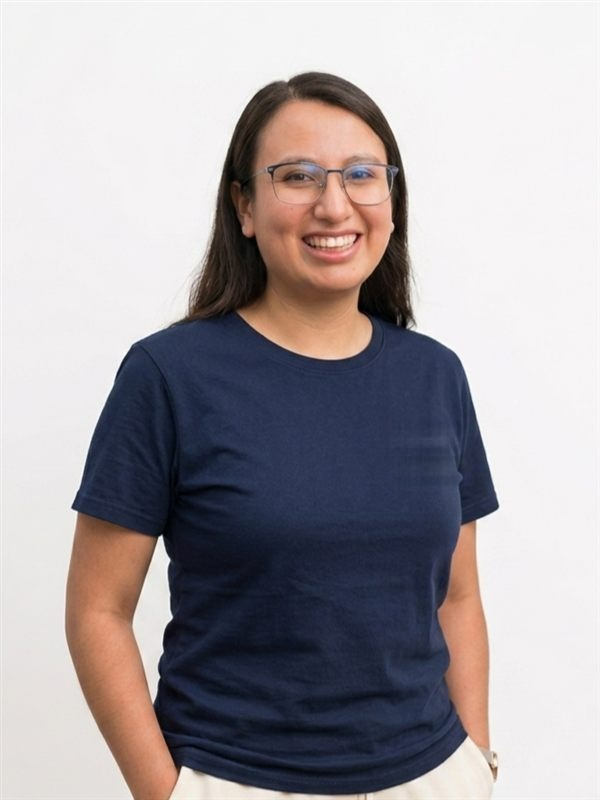

01
Brenda Flores · Senior Frontend Engineer
React and TypeScript at enterprise scale, tested and measured.
7+ years building software, the last four on enterprise SaaS at Nextiva. I own each feature end to end: I design it, test it, roll it out behind a feature flag, and watch how it behaves in production. I use Claude Code every day to move faster, without making the code harder to maintain.
7+
years of experience
100K+
businesses on products I helped build
2.2s
LCP, down from 3.4s

Querétaro, MX · Remote02
Experience
Seven years, from intern to senior frontend engineer. Alongside every full-time job, I've also taken on freelance projects for small businesses.
Full-Stack Engineer & Co-Founder · Centrixa
- Designed and built the full stack of a multi-tenant SaaS for auto body shops: React and TypeScript frontend, NestJS API and PostgreSQL, in a Turborepo monorepo.
- Kept each customer's data isolated with PostgreSQL Row-Level Security, and added RBAC, JWT authentication and a UI that only shows each user what their role allows.
- Built the development workflow around Claude Code (MCP servers, six agents, custom skills), with CI/CD on GitHub Actions.
Frontend Engineer · Nextiva
- When Nextiva moved to subscription packages, I led the architecture of the entitlements system that decides which features each customer sees based on their plan: a reusable React Query hook plus feature flags, used across nearly every module.
- On list-heavy views, cut LCP from 3.4s to 2.2s and INP from 400ms to 180ms (measured with Lighthouse) using lazy loading, code splitting, virtualization and memoization.
- Coordinated production releases with Statsig feature flags, rolling out gradually and rolling back fast when something broke. When critical incidents hit, I handled them and found the root cause with Datadog.
- Took over QA for my team: manual testing across browsers, plus automated tests with Jest and Playwright.
- Used Claude and GitHub Copilot for PR reviews, test generation and scaffolding, and reviewed everything they generated before it went in.
- When Nextiva acquired Simplify360 and its Angular codebase, I migrated 10+ modules into React packages in a pnpm monorepo, keeping both working together.
- Built accessible components (ARIA) from Figma designs for Sedona, Nextiva's component library. I also defined API contracts with backend engineers and mentored junior engineers through code reviews.
Independent Software Consultant · Freelance
- Built CTIASP, an operations platform for an auto repair shop: ~90% of manual processes went digital, and the shop now handles twice the volume with the same back-office team.
- Connected the system to 7+ insurance companies and added WhatsApp and SMS notifications; team productivity went up 22%.
- Built Fastener, a B2B e-commerce platform with 300+ products on React, TypeScript and AWS (Amplify, AppSync/GraphQL, Cognito, Lambda), with Stripe payments and per-user pricing.
Software Engineer II · Wizeline
- Built internal frontend systems with React and TypeScript inside distributed Agile teams.
- Promoted a scalable, accessible component architecture.
Software Engineer · Natgas México
- Integrated the FICO API for real-time credit bureau checks, cutting manual validation time by 93%.
- Built Angular frontends and Node.js GraphQL resolvers for two fintech platforms, and designed their PostgreSQL schemas and migrations.
- Also served as Product Owner for both products, turning business and compliance requirements into features ready to build.
Software Developer Intern · FireServiceRota
- Built modules in Ruby on Rails for a SaaS platform managing fire stations, used in the Netherlands, England and Denmark.
03
Selected work
Two enterprise products I helped build at Nextiva, and two client platforms I built from the ground up as a freelancer. Every screenshot below is the real product.
Contact center platform · Nextiva
NCX
1 hook
decides which features each customer sees by plan, across nearly every module
Zero
new passwords: enterprise teams sign in with the login they already have
12 → 1
configuration pages replaced by one guided onboarding flow
See the detail
Close
See the product, 3 screenshots
NCX is Nextiva's contact center platform: shared inbox, tickets, video calls and an AI assist panel for support and sales teams, used daily by thousands of agents at companies of every size.
I designed the architecture of the entitlements system, which is what let Nextiva move its whole pricing to subscription packages. What each customer sees depends on what they pay for, not on hardcoded checks. Under the hood it's a reusable React Query hook plus feature flags, used across nearly every module.
I also built the single sign-on integrations (Azure AD, Google, Okta), so enterprise teams sign in without creating a new password. With product and design, I built the onboarding for new customers: one guided flow, made from reused components, that replaced 12 separate configuration pages.
Unified communications · Nextiva
NextivaONE
Fixed
the bugs that made live conversations drop mid-thread
One inbox
for calls, messages and email, so no conversation gets lost between channels
3 view modes
mini, compact and large, so agents can work the way that fits them
See the detail
Close
See the product, 2 screenshots
NextivaONE centralizes calls, messages, email and team chat into one inbox, so a business never loses the thread of a customer conversation, no matter which channel it came in on.
Real-time messaging is the core of NextivaONE, so when it broke, agents lost the thread of a live conversation with a customer. I found and fixed the reliability issues in that module, and along the way rebuilt state management with Redux across several parts of the product.
I also built the mini, compact and large view modes for the inbox, so an agent who needs to scan dozens of conversations and one who needs full context on a single one can each set up their workspace the way that works for them. I also added Statsig events so the team could see where they were missing data on how people used the product.
Wholesale distributor · Freelance
Fastener Autopartes
1 in 7
orders now arrives after hours, with no one at the office
300+
products customers look up and buy on their own
100%
remote: I never set foot in the place
See the detail
Close
See the system itself, 3 screenshots
More than 300 products, no online ordering channel, and pricing and stock tracked outside any real system. Every quote went through one person. I never set foot there: the whole assessment ran over calls and screen shares.
What I foundThey had no control over their parts. Every question about a measurement or stock sent someone walking to the warehouse. The information existed, but only on the physical part.
In stages. First the storefront for their customers, with per-user pricing and permissions. Then the internal system: catalog, orders and online payments.
Auto repair shop · Freelance
CTIASP
2x
the volume, peaking at 300+ cars a month, with the same back-office team
30 s
to pull a customer file. It used to take a week
8 h
less per week: the status meeting is opened, not prepared
See the detail
Close
See the system itself, 3 screenshots
An auto repair shop already at its limit with 100 cars a month. Customer files lived in boxes in a back room, and every new car made searching for all the previous ones slower.
What I foundI sat down separately with the appraiser, the service advisor and both owners. Each described a different process. The map ended up as sheets of paper taped to a wall, and that is where it became clear their growth ceiling was not the shop floor: it was the filing system.
Phased, starting where it hurt most: internal processes first, then customer communication, then positioning. Status updates now go out on their own, customers look their car up with their work order number, and the weekly meeting runs off live KPIs.
With the operation in order, they went on to secure 7+ insurance company partnerships, which is where the extra volume came from.
04
About me
I'm Brenda Guadalupe Flores Parada, a Senior Frontend Engineer with 7+ years building software, four of them at Nextiva on NextivaONE and NCX, products used by more than 100,000 businesses across nine countries. My best work is where frontend meets business decisions: what each customer sees on their plan, permissions, onboarding and performance.
For me the work doesn't end at merge. At Nextiva I took over QA for my team, and every feature I ship goes out behind a feature flag, with monitoring, so it can be rolled back if something breaks. I hold AI to the same standard: I work with Claude Code (MCP servers and custom agents) and Copilot, and review what they generate the way I'd review a teammate's PR.
Since 2018 I've also built software on my own for small businesses in Mexico, end to end. And I've worked as a Product Owner, so I know how to turn business and compliance requirements into tickets with acceptance criteria. I'm based in Querétaro, Mexico, and work remotely in English and Spanish.
How I workFrontend architecture
Microfrontends, monorepos, multi-tenant, RBAC
Quality in production
Jest, Playwright, feature flags, Datadog
AI-assisted development
Claude Code, MCP, custom agents, Copilot
Tecnológico de Monterrey
B.Eng. Computer Systems Engineering · 2015–2020
EPITA · France
Exchange semester, Software Engineering · 2019–2020
AWS Certified Cloud Practitioner
Amazon Web Services · 2022
Top 5, Nextiva Global Hackathon
Company-wide competition
Redux talk at DevDay4W
Software Guru conference
05
Let's talk
I'm looking for a remote Senior Frontend or Full-Stack role. If you're hiring, or want to know more about any project above, email me or find me on LinkedIn and GitHub.
brenda@brendaflores.co© Brenda Flores Privacy